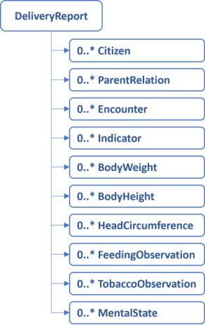
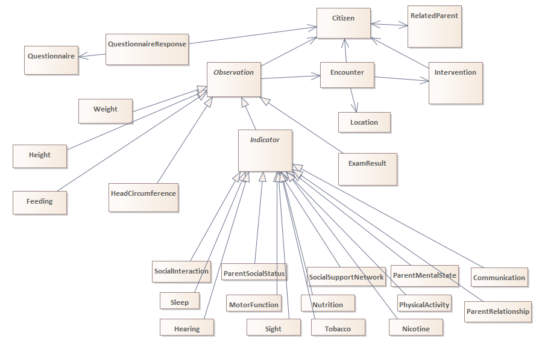

Official URL: http://fhir.kl.dk/children/ImplementationGuide/kl.dk.fhir.children
Version:
2.0.1
Active
as of 2024-06-24
Computable Name: KLChildren
KLChildren
This implementation guide describes the delivery of children health data to KL Gateway. The data originates from the documentation made by health nurses (sundhedsplejersker) in the Danish municipalities. The reporting aims for compliance with the Danish core profiles and the current work on a shared information model (FKI) for data in the Danish municipalities.
The profiles for the reporting are restricted to allow only the information that is required to report to KL Gateway.
Overview
The data is reported as a collection of instances. A report may contain instances that conforms to the profiles defined in this implementation guide. See figure below.

In addition to being structured as a report, relationships exist between the profiles. These are illustrated in the UML Class Diagram in the figure below.

The Class diagram shows that Citizen and RelatedParent known each other. The association where the Citizen refers to the RelatedParent is used to represent a parent-citizen associated with a parent role. The association where RelatedPerson refers to the Citizen is used to represent that the parent-role is in relation to the child-citizen.
Intervention, Encounter, Observation and QuestionnaireResponse are all associated with Citizen i.e. these profiles know which Citizen they hold information about. Encounter may be associated with a Location, which is used for school codes. QuestionnaireResponse refers to the Questionnaire defining it. Questionnaire instances relevant for children’s health are defined in this implementation guide, thus implementers can refer to these using their canonical url, in QuestionnaireResponse instances. Consequently, Questionnaire instances are not send in reports.
The Observation class represents a basic FHIR Observation, which is not instantiated in the report. Notice that the resource Indicator is abstract, so this is not instantiated either. However, all the other Observations, inherits from these two. The classes that inherits from Indicator are evaluations of child or parent health as made by the Health nurse. They are characterized by being mandatory at some point (see special constraints below), and by including codes that represent both normal findings and problems as possible results. Weight, Height HeadCircumference and Feeding are also mandatory at different points in time. However, the results of these Observations have another structure than Indicator e.g. quantity. The Exam Results are characterized by being history taking information or observations that are never mandatory, and only documented when relevant i.e. they typically express abnormal findings.
Relevant profiles inherit from dk-core, even though it is not illustrated specifically in the Class Diagram. The following profiles from dk-core are used: Citizen, Observation, BasicObservation, Condition and RelatedPerson.
Special constraints, and resulting reporting practises
Whereas the report may seem unconstrained, each profile define constraints on attributes, datatypes and cardinalities. In addition, extra constraints are implemented to accommodate the rules of reporting data to The National Child Health Register, see guidance and Fælleskommunal standard for forebyggende sundhedsydelser til børn og unge (FBU). These additional constraints are established to guarantee that all required observations are included when reporting specific standard encounters. Note that the constraints only apply, when the appropriate encounter-type is applied, and when Enconter.Class is ambulatory “AMB” or Home visit “HH”. A table is presented below (Danish names for standard-visits):
When an encounter is completed without obtaining the a mandatory observations, the rules require that an observation be reported and given a ‘dataAbsentReason’.
Be aware that reporting challenges may arise if documentation is completed in the days after a visit. If a report lacks mandatory observations, you should attempt to submit the record within the next two days to check if documentation has been completed. If the data remains undocumented by the end of the second day, report the observations immediately without a value and provide an appropriate ‘dataAbsentReason’.
Citizen
Information about the citizens that are the subjects of the report. This resource is used to get a reference to the child. However, sometimes a report holds data about the child’s parents. To ensure that this data goes into the parent’s record, the data should be related to the parent represented as a citizen. Before birth, only Citizen records for parents should be send. After birth, Citizen and relatedPerson resources for the parents should only be included when and if, they are relevant for the child’s report.
Attributes
civil registration number (CPR-nr)
identification of the municipality holding and reporting the data
a reference to ParentRelation that holds additional information about the citizen’s children.
a FHIR status attribute used to report errors.
Validation
One and only one civil registration number exists, and is a syntactically valid CPR-nr
One and only one managing organization exists, and is a syntactically valid SOR code (only code length is currently validated in the profile, but the authorization validates the actual SOR code)
One reference to ParentRelation may exist
One FHIR status may exist, and should be drawn from the standard ValueSet.
ParentRelation
Information about the relationship between a child and its parents.
Attributes
a reference to the Citizen instance that holds the child’s information
a relationship type that states that this is a ‘parent’-relationship.
a FHIR status attribute used to report errors.
One FHIR status may exist, and should be drawn from the standard ValueSet.
Validation
one and only one reference to the Citizen exists
one and only one relationship type exists, and the value is fixed to ‘PRN’ for parent.
Encounter
Information about when a child and/or parents meet the health nurse (sundhedsplejerske) in a Danish municipality context.
Attributes
Type of encounter. The attribute describe which health nurse visit/encounter is delivered using a code.
Encounter class. The attribute holds a code which describe the place of delivery e.g. home visit, ambulatory or virtual.
The encounter start-time
The encounter end-time
A reference to the Citizen instance that holds the child’s information
A FHIR status attribute
A reference to a Location, that holds the school code
Validation
One and only one encounter-type exists, and should be drawn from a specific ValueSet, no other codes may be reported.
One and only one encounter class exists, and should be drawn from the standard FHIR-ValueSet
One and only one encounter start-time exists
One encounter start-time may exist
One and only one reference to the Citizen exists
One and only one FHIR status exists, and should be drawn from the standard FHIR-ValueSet
A reference to a location may exist
Location
A place physical or abstract
Attributes
An identifier, which holds the Danish school code
A type, which states that the location is a school
A FHIR status attribute ^short = “[DK] Lokationsstatus”
Validation
One and only one identifier exists
type is always ‘SCHOOL’
status may exist, and is assumed active if not present
Indicator
A simple form of observation where a whole area of concern is evaluated. The value is always a code. Indicator is abstract. The following describes how the specializations of Indicator is validated.
Attributes
Code that describe the kind of indicator.
Value that describes whether everything is normal, a potential problem exist, or a problem is present. Note that each of the specializations of Indicator, controls the valid values.
A reference to the Citizen instance that holds either the parents or the child’s information
A reference to the Encounter in which the indicator have been evaluated
The time of the evaluation
A dataAbsentReason, which is a possibility to describe why data is absent
A FHIR status attribute
Validation
One and only one code exists to describe the kind of indicator. It is a fixed code for each of the specializations.
One value which is always a code may exist. For each specialization, it should be drawn from a specific ValueSet, no other codes may be reported.
One and only one reference to the Citizen exists
A reference to an Encounter may exist
The time of the evaluation is mandatory
DataAbsentReason is possible when the value is absent, and should be drawn from the standard FHIR ValueSet
One and only one FHIR status exists, and should be drawn from the standard FHIR-ValueSet
ExamResult
Optional detailed history and examination findings from the health nurse record. For each finding a new instance of this model is needed.
Attributes
One codes that means that this is a history and/or examination observable
A value which is a code
An observation-time
A reference to the Citizen instance that holds the child’s information
A reference to the Encounter in which the observation occurred
A FHIR status attributeFHIR-ValueSet
Validation
The observation code should be present, and fixed to a specific SNOMED CT code
One value may exist. It should be drawn from a specific ValueSet, no other codes may be reported.
The observation-time is mandatory
One and only one reference to the Citizen exists
A reference to an Encounter may exist
One and only one FHIR status exists, and should be drawn from the standard FHIR-ValueSet
Weight
A child’s weight
Attributes
A category that is used for commonly used vital-signs observations internationally
Two codes that describes that this is a weight observable
A value that describes how much the child weighs
A dataAbsentReason, which makes it possible to describe why data is absent
An observation-time
A reference to the Citizen instance that holds the child’s information
A reference to the Encounter in which the observation occurred
A FHIR status attribute
Validation
The category should be present, and fixed to a specific code
The two weight codes should be present, and fixed to a specific LOINC and SNOMED CT code respectively
The value should be given as a decimal point in grams or kilograms, and the UCUM-unit should be applied
One dataAbsentReason is mandatory if the value is empty
The time is mandatory
One and only one reference to the Citizen exists
A reference to an Encounter may exist
One and only one FHIR status exists, and should be drawn from the standard FHIR-ValueSet
Height
A child’s length/height
Attributes
A category that is used for commonly used vital-signs observations internationally
Two codes that describes that this is a height/length observable
A value that describes how long/tall the child is
A dataAbsentReason, which makes it possible to describe why data is absent
An observation-time
A reference to the Citizen instance that holds the child’s information
A reference to the Encounter in which the observation occurred
A FHIR status attribute
Validation
The category should be present, and fixed to a specific code
The two weight codes should be present. One is a fixed LOINC code. The other is either a SNOMED CT length or a SNOMED CT height code.
The value should be given as an integer in cm, and the UCUM-unit should be applied
One dataAbsentReason is mandatory if the value is empty
The time is mandatory
One and only one reference to the Citizen exists
A reference to an Encounter may exist
One and only one FHIR status exists, and should be drawn from the standard FHIR-ValueSet
HeadCircumference
The child’s head circumference
Attributes
A category that is used for commonly used vital-signs observations internationally
Two codes that describes that this is a head circumference observable
A value that describes the child’s head circumference
A dataAbsentReason, which makes it possible to describe why data is absent
An observation-time
A reference to the Citizen instance that holds the child’s information
A reference to the Encounter in which the observation occured
A FHIR status attribute
Validation
The category should be present, and fixed to a specific code
The two observation codes should be present, and fixed to a specific LOINC and SNOMED CT code respectively
The value should be given as a decimal point in cm, and the UCUM-unit is applied
One dataAbsentReason is possible if the value is empty
The time is mandatory
One and only one reference to the Citizen exists
A reference to an Encounter may exist
One and only one FHIR status exists, and should be drawn from the standard FHIR-ValueSet
Feeding
Information about how small children are fed. It is used for observations of a childs breastfeeding.
Attributes
One codes that describes that this is a feeding observation
A value that describes what feeding method the observation is about
A dataAbsentReason, which makes it possible to describe why data is absent
An observation period in which the feeding method is used, or an observation time.
A reference to the Citizen instance that holds the child’s information
A reference to the Encounter in which the observation occured
A FHIR status attributeFHIR-ValueSet
Validation
The observation code should be present, and fixed to a specific SNOMED CT code
One value may exist. It should be drawn from a specific ValueSet, no other codes may be reported.
One dataAbsentReason is possible if the value is empty
The period start, or observation time is mandatory. periode-end is optional
One and only one reference to the Citizen exists
A reference to an Encounter may exist
One and only one FHIR status exists, and should be drawn from the standard FHIR-ValueSet
Intervention
Interventions that are carried out by health nurses in childrens health promotion and disease prevention. Only need-based interventions are reported. The standard program that all children in Denmark recieves is not reported as interventions.
Attributes
A code that decribes which intervention it is
A start-time
An end-time
A reference to the Citizen instance that holds the child’s information
A reasonCode that describe the condition which is the reason for the intervention
Three FHIR status attributes
Validation
One and only one code is mandatory and should be drawn from the specified ValueSet
One and only one start-time is mandatory
Only one end-time may be given
One and only one reference to Citizen is mandatory
The reasonCode is optional. If present it should be drawn from the specified ValueSet. More than one code is allowed.
The FHIR status attributes are mandatory, and should be drawn from the standard FHIR-ValueSet.
QuestionnaireResponse
Response to a Questionnaire. Questionnaires may concern child or parents. The questionnaire may be filled out by the health nurse or the citizen.
Attributes
An adress pointing to the Questionnaire being answered
A reference to the Citizen instance that holds the child’s or a parent’s information
A reference to the Encounter in which the Questionnaire is answered
A questionnaire completion time
A number of answers to the questions in the Questionnaire
A FHIR status attribute
Validation
One and only one adress pointing to the Questionnaire exists
One and only one reference to citizen exists
One reference to encounter may exist
The questionnaire completion time is mandatory
At least one answer should be reported
One and only one FHIR status exists, and should be drawn from the standard FHIR-ValueSet
Dependencies
IG
Package
FHIR
Comment
KLChildren implementation guide, an implementation of FBU
This IG defines the global extensions - the ones defined for everyone. These extensions are always in scope wherever FHIR is being used (built Sat, Apr 27, 2024 18:39+1000+10:00)
Package hl7.fhir.uv.phd#1.0.0
ImplementationGuide for Personal Health Devices (PHD), used in remote patient monitoring (e.g., weight scales, blood pressure cuffs, glucose monitors, pulse-oximeters, etc.). (built Thu, May 12, 2022 20:20+0000+00:00)
Package hl7.fhir.dk.core#3.2.0
A FHIR Implementation Guide for the Danish common needs across healthcare sectors (built Mon, May 6, 2024 15:20+0200+02:00)
This publication includes IP covered under the following statements.
The UCUM codes, UCUM table (regardless of format), and UCUM Specification are copyright 1999-2009, Regenstrief Institute, Inc. and the Unified Codes for Units of Measures (UCUM) Organization. All rights reserved. https://ucum.org/trac/wiki/TermsOfUse
This material contains content that is copyright of SNOMED International. Implementers of these specifications must have the appropriate SNOMED CT Affiliate license - for more information contact https://www.snomed.org/get-snomed or info@snomed.org.

 KLChildren implementation guide, an implementation of FBU
KLChildren implementation guide, an implementation of FBU